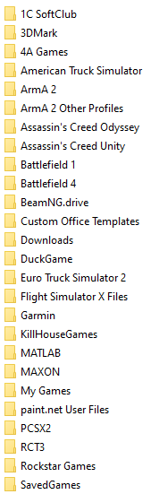
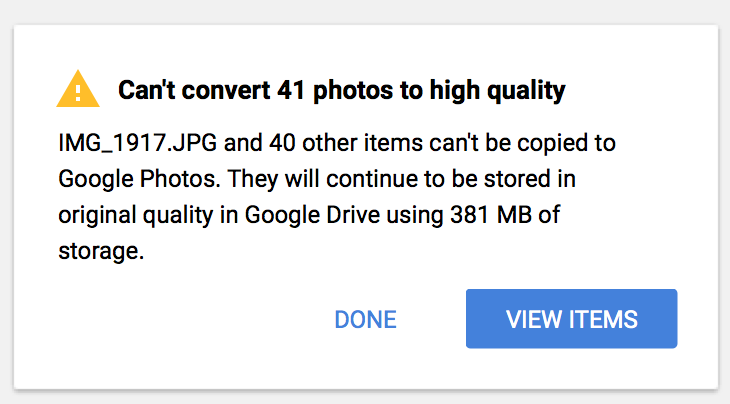
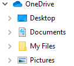
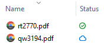
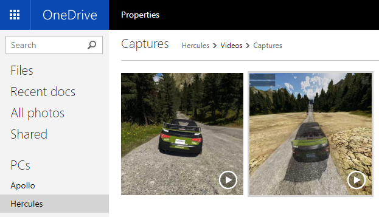
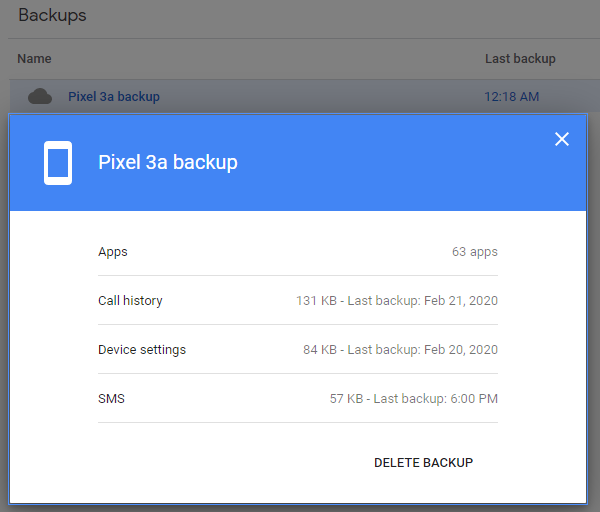

Google Drive Isn’t a Very Good Product

Background
To start off with, I’m incredibly invested in the Google ecosystem. My Gmail account is my main email account. I love Google Photos. I live by my Google Calendar. I use Google Keep extensively for making lists. I use Google Pixel phones. I register all of my domain names through Google Domains. You get the idea. So why don’t I use Google Drive? Because it’s just not that great…
I used to use Google Drive for file syncing. It made sense, since I was so invested into the Google ecosystem, but here’s why I moved away from it.
Syncing Documents Folder
The major reason I stopped using Google Drive is that it doesn’t sync your Windows Documents folder. Yes, it does backup your Documents folder, but you can’t natively sync two computers together. They just show up under two separate “computers” in your Google Drive and you can’t connect them.
(I’m aware you can sort of get around this by changing the location of the Documents folder to be inside the Google Drive sync folder.)
This was a huge pain point for myself. Games like to use the user’s Documents folder as a location to save settings and gamesaves.

Some games I play either aren’t on Steam, or don’t support Steam’s cloud saves, and I really wanted to be able to play a game on my desktop and be able to continue seamlessly on my laptop. Accidentally losing game saves or having to manually download files from the Google Drive website was getting really annoying.
I then discovered that Nextcloud lets you sync any folder(s) you want on your system. I was so excited, I immediately setup my own Nextloud server and moved all of my files to it. This worked great, but had a major limitation described in the next section.
Virtual File System
Google Drive does not support any sort of virtual file system (for consumers. Google Drive File Stream is only available to GSuite customers).
What I mean by a virtual file system is where files appear to be on your system, but are actually just placeholders. When a file is accessed by a program, the file is quickly downloaded to be used. This is great for saving space as files that are not used often can be removed locally and only retrieved when needed. Applications don’t notice the difference and work seamlessly with it. See VFS for Git which is a very similar technology develped by Microsoft for Git.
When you sync the Google Drive folder, you must download EVERYTHING or exclude specific top-level directories. This means, if for example I don’t want to sync my 20GB of ISO files to my laptop, I need to put them in a seperate top-level folder and exclude those. While not terribly difficult to do, it made me consciously think about how my folders were organized with respect to file size so that I could exclude certain ones on my laptop which doesn’t have as much disk space.
Nextcloud is just like Google Drive in this regard. However, Nextcloud does provide some more advanced exclusion options. Google Drive makes you sync everything.
Other Issues
In general, I’ve also had a bunch of problems with the Google Drive Backup and Sync client for Windows as well.
Opening the application from the system tray is very slow and laggy and makes it feel like it’s not a native Windows application.
I’ve constantly gotten the obnoxious “Can’t convert X photos to high quality” message while using the backup to Google Photos option. Sometimes this is due to the client thinking certain file formats are pictures when they are actually not.

My parents use Google Photos for their 20+ year old photo collection so I’ve set them up with the Backup and Sync client. I recently had to help them restore their Documents folder after their desktop computer died and we had to reinstall Windows.
It was a nightmare. Because of how Google Drive treats seperate computers as mentioned before, getting Google Drive to restore the Documents folder and not just try to backup a brand new, empty, copy was frustrating. Then, once that got situated, the Backup and Sync program would create empty folders, but not actually download the files in them, and claim everything was synced. Of course, this was only happening to some folders, and not all. That took a long time to fix. The whole ordeal made me lose all faith in the ability to actually safely restore data.
OneDrive
Fed up with Google Drive and tired of syncing mountains of data with Nextcloud, I looked into options. I thought to myself “Microsoft’s OneDrive is built into Windows, why not try that?“. I did and wow was I impressed.
Most importantly for me, it natively syncs the Documents, Pictures, and Desktop folders.

It supports a virtual file system (called “Files On Demand”) so files that aren’t used within a certain number of days are removed locally.

I absolutely love this feature. I was able to sync my 10GB Documents folder from my desktop with my laptop in seconds since files are only downloaded as needed. No more do I need to worry about strategically laying out my folder structure to group large files that I don’t want synced.
Pricing is in-line with Google Drive beyond the free tier, and the higher tiers include Office desktop apps. At the time of writing, 5GB is free, 100GB is $2/month, and 1TB is $70/yr with Office included. While less generous than Google Drive’s free 15GB, I have no problem paying $2/month.
Lastly, a really cool feature that isn’t well advertised is that if a computer connected to your OneDrive is online, you can browse it’s entire filesystem from the web and download files from it. This is super handy if you’re on the go, and need to download some file that you forgot to put in the OneDrive folder.

Additionally, if you use OneDrive with Office, your documents get auto-saving.
Other Options
While I quickly fell in love with OneDrive, I did look into alternatives.
Box
While Box offers file-streaming like OneDrive, pricing is way higher at $10/month for only 100GB. It also appears the only way to sync the documents folder is to apply the same hack that I would for Google Drive.
Dropbox
Considering that right now, going to dropbox.com takes you to the business plans, consumer Dropbox may not be long for this world. However, just like Box, Dropbox does support file-streaming (“Dropbox Smart Sync”), but it appears you can’t sync the Documents folder. Additionally, the plans jump from a free 2GB to 2TB at $10/month. I don’t need 2TB of storage, and don’t really want to pay $120/yr and not be utilizing 98% of it.
Conclusion
While I have a few complaints about OneDrive (primarily, how there is no way to exclude any folders or filetypes), I’m exceptionally happy. It just works. It’s built-in to Windows directly, the files-on-demand feature is magical, and the pricing is reasonable. While I am stepping outside of the sacred Google ecosystem, it really hasn’t been an issue. Google Drive isn’t tied into other Google services as much as say Gmail and Calendar and Contacts. The only thing I still use Google Drive for, is my Pixel phone backup, since that’s built-in to the phone (and it has really saved my ass recently).
